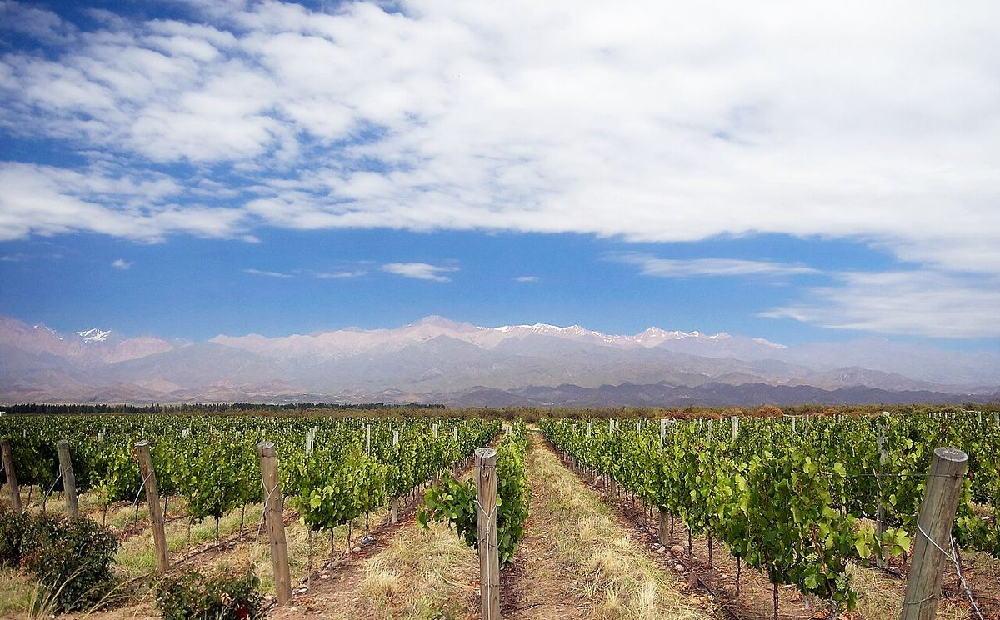

ROUGE
Mendoza est la principale province viticole d’Argentine et concentre la majeure partie du vignoble du pays. Ses oasis irriguées au pied des Andes sont la terre du malbec par excellence.

La ville de Mendoza fut fondée en 1561 par des expéditions venues du Chili, et la vigne y fut cultivée dès les premiers temps de la colonie grâce à un système de canaux d’irrigation hérité en partie des peuples autochtones huarpes. En 1853 fut créée dans la ville une Quinta Normal d’agriculture, où l’agronome français Michel Aimé Pouget introduisit des cépages français, dont le malbec. L’arrivée du chemin de fer en 1885 et l’immigration européenne firent de Mendoza un grand pôle viticole tourné vers le marché national. Depuis les années 1990, la province est le principal théâtre de la modernisation du vin argentin.
Le climat est continental et désertique, avec des précipitations rares, concentrées en été, et un ensoleillement très élevé. La viticulture dépend de l’eau de fonte des rivières Mendoza, Tunuyán, Diamante et Atuel, distribuée par un réseau de canaux. L’altitude des vignobles, d’environ 500 à plus de 1 500 mètres, tempère la chaleur et accentue l’écart thermique entre le jour et la nuit. La grêle, les gelées et le vent zonda sont les principaux risques.
Dominent les sols alluviaux, pauvres et perméables, de sable, de limon, de gravier et de galets, dont la composition varie beaucoup d’un domaine à l’autre selon la proximité des anciens lits de rivière. Dans certaines zones d’altitude apparaissent des croûtes et des dépôts calcaires.
On distingue généralement cinq grandes zones : la zone Nord, près de la capitale ; la Primera Zona ou zone haute du río Mendoza, avec Luján de Cuyo et Maipú ; la vallée de Uco, au sud et plus en altitude, avec Tupungato, Tunuyán et San Carlos ; la zone Est, la plus étendue et la plus productive, avec des départements comme San Martín, Junín et Rivadavia ; et la zone Sud, avec San Rafael et General Alvear. On y trouve de nombreuses indications géographiques et deux dénominations d’origine contrôlées, Luján de Cuyo et San Rafael.
Le malbec est le cépage vedette et se décline dans tous les styles, des rouges jeunes et fruités aux vins parcellaires élevés en barrique ou en cuve béton. La bonarda, le cabernet-sauvignon, le cabernet franc et la syrah sont aussi importants, de même que les blancs de chardonnay, de sauvignon blanc et de torrontés. Les cépages criollos, comme la cereza ou la criolla grande, restent très présents dans la zone Est pour les vins courants et les moûts.